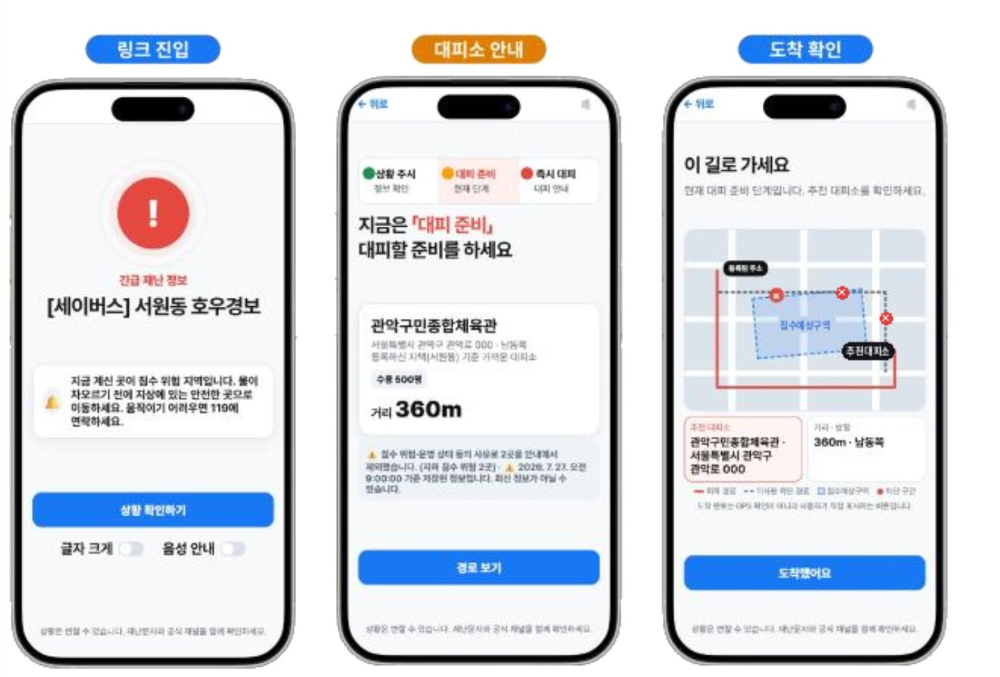

SAVERS · 재난 취약계층 맞춤 대피 안내 서비스
팀장 · PM · QA/보안 · 인프라 (4인 팀) · K-디지털 트레이닝 해커톤 2026 · FastAPI, LangChain, OSMnx, NetworkX, AWS EC2, FCM

- 문제: 홍수 경보는 모두에게 같은 문자를 보내지만, 혼자 판단·대피하기 어려운 주민에게는 앱 설치나 상시 위치 추적 없이 개인별 안내가 필요
- 담당 업무: 평가 코드(보호자 응답 골든셋 40건(답변 35·거절 5), 적대 회귀 12건, 채점 스크립트, 거절 측정)와 인프라 코드(FCM 실발송 연결, AWS 배포, 자동 품질 검사 CI) 담당, 설계 결정 기록(ADR) 관리, 논문 제1저자 집필
- 대피소 선택과 도보 경로는 LLM에 맡기지 않고 규칙 기반 코드(OSMnx/NetworkX)로 계산해, LLM은 이미 정해진 결과를 설명만 하도록 설계
- 검증기는 답변을 주장 단위로 쪼개 이벤트 기록과 대조하고, 통과 기준은 "기록에 없는 내용 0건". 구현을 맡지 않은 입장에서 명세만 보고 이 검증기를 검증할 평가셋을 작성: 정답 답변 35/35 통과, 오답 유도 프롬프트 12/12 차단(처음 8/12 → 뚫린 4건을 분석해 채점기 보강)
- 챗봇이 답해야 할 때와 거절해야 할 때를 모두 측정: 불필요한 거절은 3.6%(1/28)로 낮았지만, 거절이 정답인 대조군 6건에는 모두 엉뚱한 근거로 답하는 과소거절 100%를 찾아냄. 기존 근거 일치 지표로는 드러나지 않는 실패였고, 원인이 검증기가 아니라 앞단 검색에 있음을 확인
- 지인 52명에게 재난문자와 SAVERS 화면을 차례로 보여 준 설문에서 행동 지침 명확성("지금 무엇을 해야 할지 분명한가", 10점 만점) 3.2 → 8.3점(Wilcoxon p<0.001), "5분 안에 집을 나서겠다" 13% → 60%
- 고용노동부장관상(장려상, 326팀 중 3위), ACK 2026 논문 제1저자·구두발표
- 한계: 측정 당시 생성기는 근거 문장을 그대로 옮기는 오프라인 스텁이라, 실제 생성 모델을 붙인 뒤 다시 측정해야 함